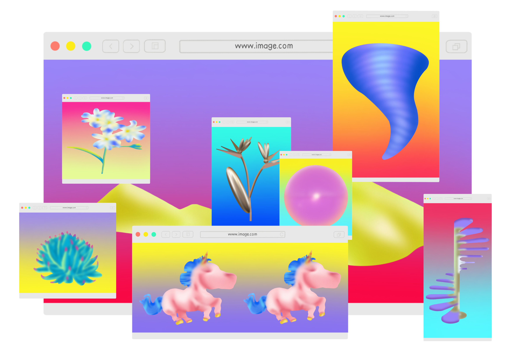
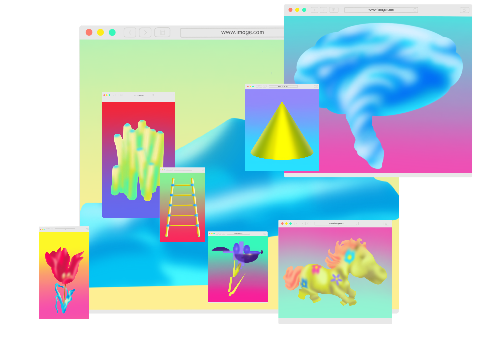
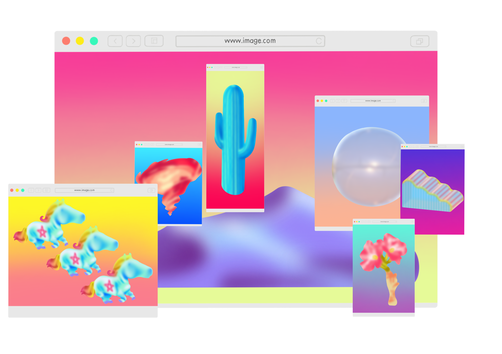
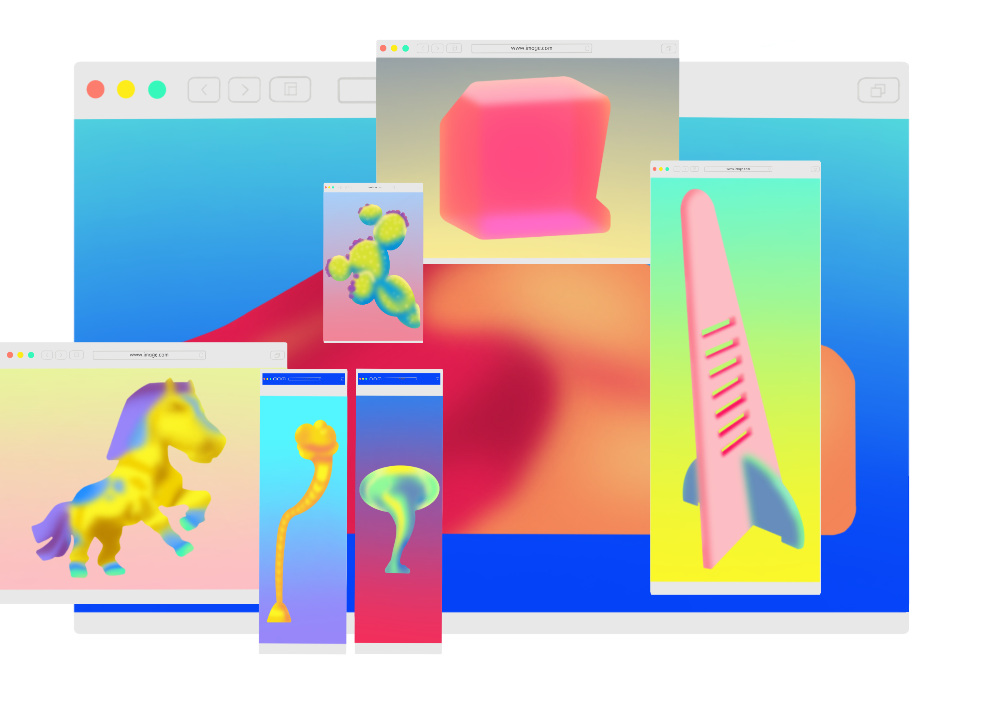

You have a somewhat low sense of self-worth and may lack confidence. You are naturally gentle and mild-mannered, willing to adapt, and feel that you are quite sensitive. You focus more on your inner world, are methodical and take things step by step, but find it difficult to be flexible. You feel that those around you cannot provide stable support, so you rely on yourself for everything. You see support as tangible, but not something that will last forever, and you feel they cannot be of much help. You may still be weighing your options, or perhaps you hope your partner will possess a variety of traits. You want your other half to be energetic and driven, yet you find them hard to predict, or perhaps you yearn for a relationship that offers freedom; you haven’t quite sorted out your feelings yet. You want children or a pet; your relationship with children is left to fate, without forcing it. You’d like two or so, with no specific requirements—just healthy and happy. You hope your children will be calm and quiet. Things are going reasonably well, with no major upsets. You sense trouble is on the horizon, but feel you can weather it, though it will leave some scars.

You have a somewhat low sense of self-worth and may lack confidence. You are principled and resistant to change, and may come across as somewhat aloof. You consider yourself highly resilient under pressure and tend to focus on your inner world. You are methodical and take things step by step, but you are not particularly flexible. You feel that those around you cannot provide stable support, so you rely on yourself for everything. You perceive support as somewhat unreliable and precarious, but believe that family and friends can help you achieve specific goals. You tend to be committed in relationships, hoping your partner will be energetic and driven. You have a slight desire for control, though not to an excessive degree, and feel that your partner is a source of security rather than a casual acquaintance. You would like to have children or a pet, and hope your children will be close to your partner. You would prefer to have just one child, for whom you have high expectations, and hope they will be calm and composed. You have been feeling a bit under pressure recently, sensing that problems are on the horizon, and fearing that you might not be able to cope when they arise.

You have a strong sense of self-worth and are quite confident; you are principled and not easily swayed. You may come across as somewhat aloof, feel that you are easily hurt, and are more susceptible to external influences. Your thinking tends to be unconventional, and you believe the future is full of uncertainty. You derive a sense of security and trust from family and friends, though you feel that this support is somewhat unstable and precarious; you believe that family and friends can help you achieve specific goals. You may still be weighing your options, or perhaps you’re looking for a partner with a variety of qualities. You hope for a relationship that is relaxed and natural; you like to feel in control, whilst also deriving a sense of security from your partner, whom you see as a free-spirited individual. You’d like to have children or a pet; you hope your children will be close to you, and you’d like to have one child, for whom you have high expectations, hoping they’ll be lively and cheerful. Things are going reasonably well, with no major upsets; any problems are behind you, and you feel you’re able to cope well with pressure.

Your sense of self-worth is moderate and fairly balanced; you are principled and steadfast, not easily swayed. You may come across as somewhat reserved, and whilst you feel capable of handling things on your own, you should avoid pushing yourself too hard. You tend to focus more on your inner world, are quite pragmatic, and have a clear sense of where you’re heading.You have good relationships with family and friends, though you do not rely on them entirely. You see their support as tangible, yet not something that will last forever, and you feel they cannot be of much help. You tend towards monogamous relationships and hope your partner will be energetic and driven. You have a slight desire for control, though not to an excessive degree, and you have not yet fully sorted out your feelings regarding relationships. You may not want children or pets. Your life is currently relatively carefree, but you sense that problems are on the horizon. You believe you can weather them, though they will leave some lasting marks.